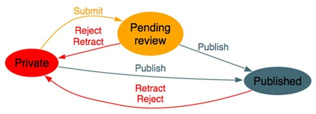
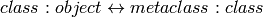

Last week we developed the interface for a state-machine based Workflow class that allows implementing simple workflows like this classical publishing example:
This was how we specified the workflow graph:
class PublicationWorkflow(Workflow):
def setup(self):
"""called by Workflow.__init__"""
self.add_state('private', initial = True)
self.add_state('review')
self.add_state('published')
self.add_transition('private', 'review', 'submit')
self.add_transition('private', 'published', 'publish')
self.add_transition('review', 'published', 'publish')
self.add_transition('review', 'private', 'retract')
self.add_transition('published', 'private', 'retract')
It is supposed to be used as adapter:
class Article: pass
a = Article()
# adapts to any object
PublicationWorkflow(a).transition_to("published")
While this adapter usage of the Workflow classes is as we wanted it to be, the definition of PublicationWorkflow is quite bloated. Also, setup() is run upon every instantiation of a Workflow. Besides the performance overhead, this also means that any checks we want to do on the workflow graph are delayed until then.
To improve on that, we want to write this:
class PublicationWorkflow(Workflow):
initial = 'private'
states = ('private', 'review', 'published')
transitions = (
('private', 'review', 'submit'),
('private', 'published', 'publish'),
('review', 'published', 'publish'),
('review', 'private', 'retract'),
('published', 'private', 'retract'),
)
and we want the sanity checks to run right at this point where we define the class, not later when we instantiate it.
Metaclasses are to classes what classes are to objects:

Or
Metaclasses are the class of a class
Metaclasses are factories for classes
type is the built-in metaclass, lets see how it works:
class Foo(object):
bar = 1
# is the same as
Foo = type("Foo", (object,), {'bar': 1,})
So that whole class thing is really just syntactic sugar for ‘evaluate the class suite, throw the result into your metaclass, bind the result to the provided name’.
We can hook in here with our own metaclass:
class Foo(object):
__metaclass__ = Meta
bar = 1
class Meta(type):
def __new__(mklass, name, bases, namespace):
return type.__new__(mklass, name, bases, namespace)
def __init__(klass, name, bases, namespace):
pass
__new__ is a class method and will be called first - because it returns the new class it can also change the type and name, even return a completely different class (useful for singletons). It can also add new items to the namespace or change the list of base classes. __init__ is called later and restricted to modifying existing entries in namespace.
If only __init__ is required, a metafunction will do:
def Meta(name, bases, namespace):
...
Whenever we want to act on a class upon its creation, eg. for
- Validating class data (eg. the Workflow transition checks mentioned above)
- Provide more natural, declarative end-user interface (also Workflow, compare to our previous implementations)
- Auto-decorating of methods
- Auto-registration of classes
Most stuff can be implemented in other ways, too, but might result in less clean APIs.
Note
meta-methods and -properties are the only features exclusively available thru metaclass use.
__metaclass__ are inherited, but can be overwritten. Whatever happens, only one metaclass is called.
No changes except for how you specify the metaclass:
class Foo(metaclass=MyMetaClass):
pass
2to3 catches __metaclass__ attributes and does the conversion automatically.
In-depth presentation on metaclasses in 2.2: http://www.vrplumber.com/programming/metaclasses.pdf
Guido’s Blog post about the history of metaclasses: http://python-history.blogspot.com/2009/04/metaclasses-and-extension-classes-aka.html
For the non-selfists, Michael Foord shows how to get rid of the canonical self as first parameter in instance method signatures: http://www.voidspace.org.uk/python/articles/metaclasses.shtml